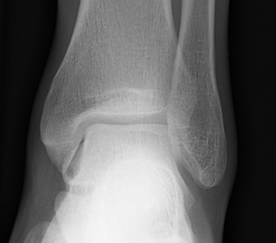
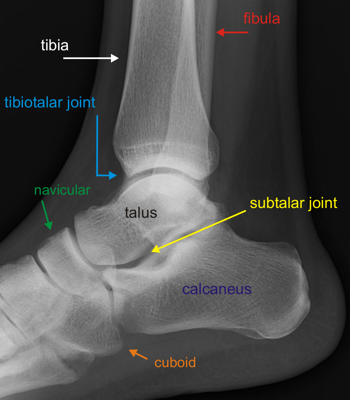

Imaging
Radiographs
- AP, mortise and lateral views of the ankle usually reveal the fracture
- Hawkins sign: subchondral osteopenia in the vascularized non-weight-bearing talus at 6-8 weeks
- Implies viability of the subchondral bone (osteonecrosis is unlikely)
- Mortise: inspect for lateral process fracture

Normal AP ankle

Normal lateral ankle
 Normal ankle mortise
Normal ankle mortise
- AP, oblique and lateral views of the foot to assess talar head and associated foot injuries
 Normal AP foot: yellow dotted line highlights normal TMT joint alignment
Normal AP foot: yellow dotted line highlights normal TMT joint alignment
 Normal oblique foot: yellow dotted line hightlights normal TMT joint alignment
Normal oblique foot: yellow dotted line hightlights normal TMT joint alignment
 Normal lateral foot
Normal lateral foot
- Canale view: foot placed in maximum plantarflexion, pronated 15° with beam directed cephalad 15° from vertical
- Provides best view of the neck
- CT: evaluate extent of articular incongruity, degree of comminution and incarcerated bone fragments
- Should be considered for identification of lateral process fractures
- MRI: for occult fractures and evaluation of osteonecrosis